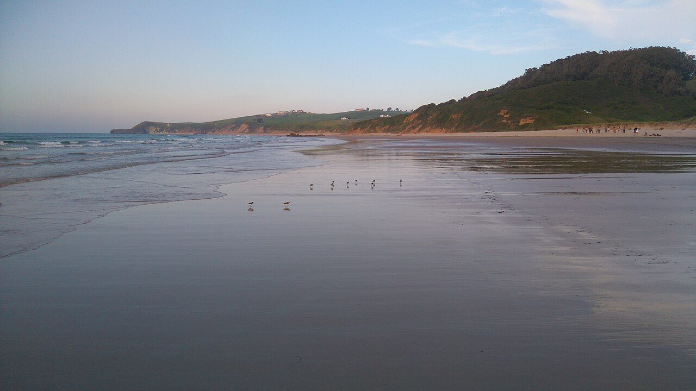

Parque Natural de Oyambre
Criterios: PN 6.2, PN 4.2
🤔 Pienso5 min
Qué hago aquí: Piensa un momento y contesta con lo que ya sabes. No pasa nada si no lo sabes: es para empezar.
¿Qué cosas buenas trae el turismo a un pueblo de la costa? ¿Y qué problemas?
📖 Leo y aprendo15 min
Qué hago aquí: Lee despacio, mira los dibujos y los ejemplos, y quédate con la idea clave del final.

Foto: Spinor69 · CC BY-SA 4.0 · Vida en Oyambre, San Vicente de la Barquera, Playa de Merón.jpg
Oyambre es un parque humanizado: dentro hay pueblos, caseríos, prados de siega, carreteras, campings y un campo de golf. Su reto es que todo eso conviva con la conservación de las rías, las dunas y las marismas, donde descansan muchas aves acuáticas. En verano, la presión turística es muy grande.
✏️ Hago25 min
Qué hago aquí: Haz las actividades en orden. Empieza siempre por las básicas.
Explica qué significa que Oyambre es un parque humanizado. Nombra tres elementos humanos y tres naturales que conviven en él.
Relaciona cada elemento de Oyambre con lo que aprendiste en la unidad 2: ría, duna, rasa, acantilado. ¿Cómo se formó cada uno?
Explica por qué el turismo es a la vez una oportunidad y un riesgo para Oyambre. Da dos ejemplos de cada.
Describe la foto de Oyambre como en la mirada de patrimonio: primer plano, plano medio y fondo, con su relieve, vegetación y huella humana.
Un empresario quiere ampliar un camping dentro del parque. Redacta un informe breve: qué preguntas haría el parque antes de decidir y qué condiciones pondrías si se aprobara.
Calcula la capacidad de carga: si una playa tiene 1200 m de largo por 40 m de ancho útil y cada persona necesita unos 10 m², ¿cuántas personas caben a la vez? ¿Qué pasa cuando se supera ese número?
Compara Oyambre con las dunas de Liencres: qué tienen en común y qué hace distinto a Oyambre.
🚀 Amplío (si quieres saber más)
Qué hago aquí: ¿Has terminado? Lee la curiosidad o elige el reto. Es voluntario.
Investiga el vuelo del Pájaro Amarillo de 1929: quiénes iban, de dónde salió, por qué aterrizó en Oyambre y qué pasó después. Explica por qué un hecho así también forma parte del patrimonio de un espacio natural.
✅ Compruebo5 min
Qué hago aquí: Contesta sin mirar la ficha y marca cómo lo llevas.